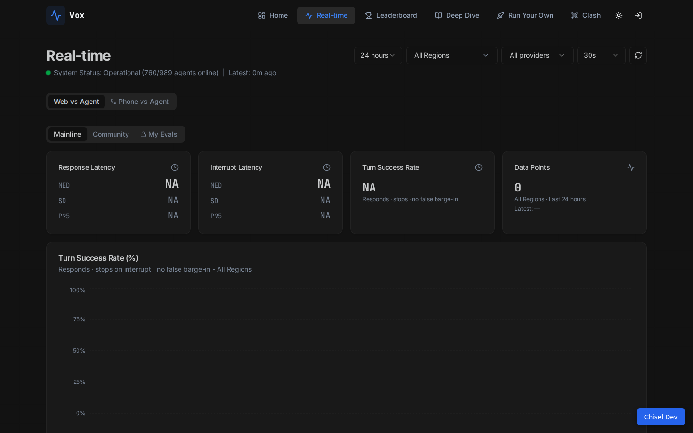

The shipped version stacks two identically-styled pill groups — the mode
(Web vs Agent / Phone vs Agent) directly above the tier tabs (Mainline / Community /
My Evals). Same shape, same size, same weight: the page can't tell you which choice is the big one.
Three alternatives below, each mocked in the page's own dark theme. Click the controls — they toggle.
Current state the problem

Two stacked pill rows compete; the mode row also pushes all content down a full band.
Option A — mode lives beside the page title recommended
The mode is not a filter and not a view — it is what the page is about.
So it belongs with the page identity: a compact segmented control right of “Real-time”, styled
unlike the pills (bordered, icon + label, blue underline on the active side). The tier tabs keep
their band to themselves, and the page gets a full row of vertical space back.
Real-time
System Status: Operational (760/989 agents online) | Latest: 0m ago
24 hours ▾All Regions ▾All providers ▾30s ▾⟳
Response Latency
NA
Interrupt Latency
NA
Turn Success Rate
NA
Data Points
0
Hierarchy reads correctly: title-level placement says “this scopes the whole page”; pills stay the only tab-shaped element.
One band saved — content returns to its pre-phone-feature height.
The blue inset underline ties the active mode to the app's accent without inventing a new color.
Trade-off: on narrow screens the segmented control wraps under the title (acceptable — it wraps whole).
Option B — one band, two ends solid alternative
Merge the two rows: tier pills keep the left edge, the mode control takes the right
end of the same band. Adjacency says “these two together define what you're looking at”; the style
difference (pills vs bordered segments) keeps them from reading as one tab group.
Real-time
System Status: Operational (760/989 agents online) | Latest: 0m ago
24 hours ▾All Regions ▾All providers ▾30s ▾⟳
Response Latency
NA
Interrupt Latency
NA
Turn Success Rate
NA
Data Points
0
Zero extra rows, and the mode sits at the same eye-line as the data it scopes.
Short labels (“Web” / “Phone”) keep the band from crowding; icons carry the rest.
Trade-off: right-end placement reads as slightly subordinate to the tiers — the reverse of the real hierarchy. Fine in practice; philosophically inverted.
Option C — mode joins the filter cluster most compact
Treat the mode as the first control in the top-right cluster, ahead of time range and
region. Everything that scopes the data lives in one place.
Real-time
System Status: Operational (760/989 agents online) | Latest: 0m ago
24 hours ▾All Regions ▾All providers ▾30s ▾⟳
Response Latency
NA
Interrupt Latency
NA
Turn Success Rate
NA
Data Points
0
Most economical — no layout change anywhere else on the page.
Trade-off: the cluster is already five controls wide; adding a sixth crowds it and demotes the mode to filter status, which contradicts the design's own “hard category, never mixed” rule. Least aligned with the semantics.
Recommendation
Option A. It is the only one where the visual hierarchy matches the data
model — mode at page-identity level, tiers as views within it, filters as refinements — and it
recovers the vertical band the shipped version spent. Option B is the fallback if you'd rather
keep the title row untouched. Implementation for A is small: move the mode Tabs into the
title flex row, restyle the trigger as the bordered segmented control (border + icon + inset
accent underline), and delete the extra band.